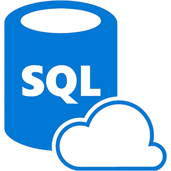
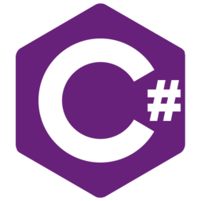
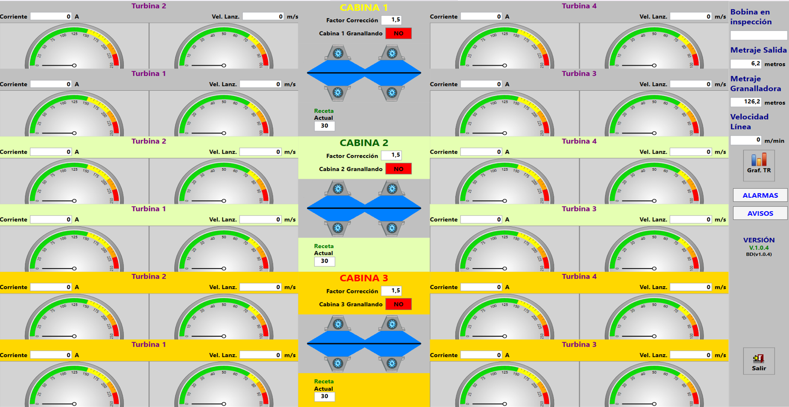
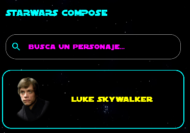

Sobre mí
Soy un programador de España con una mentalidad muy enfocada en crear software que funcione bien, que sea útil de verdad y que esté bien pensado por dentro. Me gusta organizar el código para que sea fácil de mantener y de entender por cualquier compañero que venga después. Disfruto de los retos técnicos, sobre todo cuando implican resolver problemas reales con soluciones limpias y eficientes.
A lo largo de mi formación y mis prácticas he trabajado en distintos tipos de aplicaciones, tanto móviles como de escritorio e industriales, y eso me ha ayudado a adaptarme rápido a distintas tecnologías y metodologías. Soy curioso, autodidacta, y me gusta ir siempre un paso más allá, ya sea aprendiendo por mi cuenta, haciendo pruebas o buscando nuevas formas de mejorar lo que ya funciona.
Actualmente estoy buscando un entorno donde pueda seguir creciendo como desarrollador, rodeado de gente con la que aprender y aportar. No busco solo escribir líneas de código, sino formar parte de proyectos con sentido, donde se valore el esfuerzo y las ganas de hacer las cosas bien.
Tecnologías que he usado en proyectos

Java

Kotlin

SQL
.NET

C#

Android Studio
Jetpack Compose

Firebase

GitHub
Proyectos destacados
Agente SFTP
Agente de Windows que monitoriza hasta 10 carpetas locales simultáneamente y sube los archivos detectados a servidores SFTP de forma automática, ejecutándose en segundo plano desde la bandeja del sistema.
Tecnologías: C#, .NET 8, SSH.NET, Windows Forms
EncryptorACX
Herramienta de escritorio desarrollada en prácticas para cifrar credenciales mediante AES, usada por el Agente SFTP en su archivo de configuración externo.
Tecnologías: C#, .NET, WPF, AES
Granalladora APH
Suite de aplicaciones de escritorio para monitorización en tiempo real de máquinas de granallado industriales. Configurable para operar con dos modelos de máquina: AP2 y P4, seleccionables desde archivo de configuración sin recompilar.
Comunicación con la máquina vía OPC UA y WCF, con temporizadores de refresco de datos y arquitectura modular en WPF.
Tecnologías: C#, .NET 8, WPF, OPC UA, WCF

SuperManzanares (TFG)
App de supermercado para Android que permite explorar productos, crear listas, comprar, y gestionar pedidos. Login con Google, mapas con direcciones y almacenamiento en Firebase.
Tecnologías: Kotlin, Jetpack Compose, Firebase, Room, Mapbox
StarWars Compose
Aplicación Android que consume la API pública SWAPI para explorar personajes del universo Star Wars, mostrando detalles sobre los personajes y películas en las que aparecen.
Tecnologías: Kotlin, Jetpack Compose, Retrofit, Coil

Mi Currículum Vitae
Si quieres conocer mi experiencia, habilidades y proyectos en detalle, descarga mi CV actualizado en formato PDF.
Contacto
Estoy disponible para colaborar en nuevos proyectos, resolver dudas o simplemente charlar sobre tecnología. ¡No dudes en escribirme o echar un vistazo a mis redes profesionales!